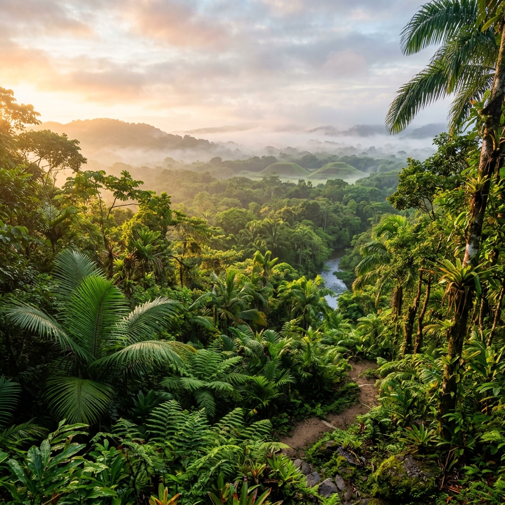
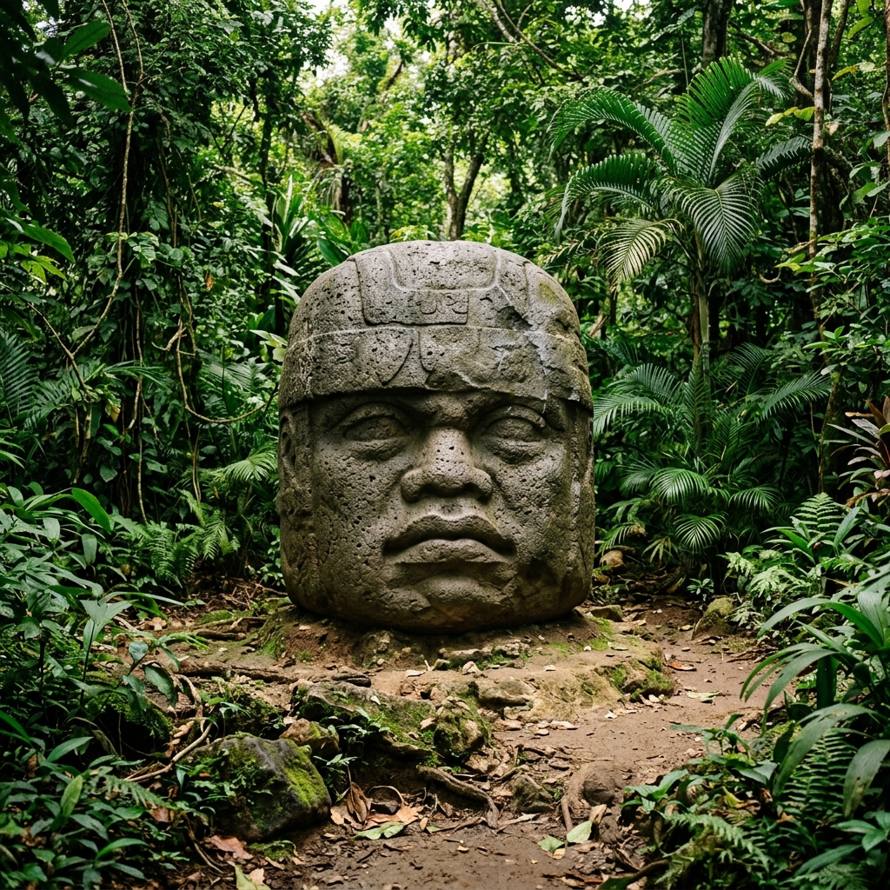
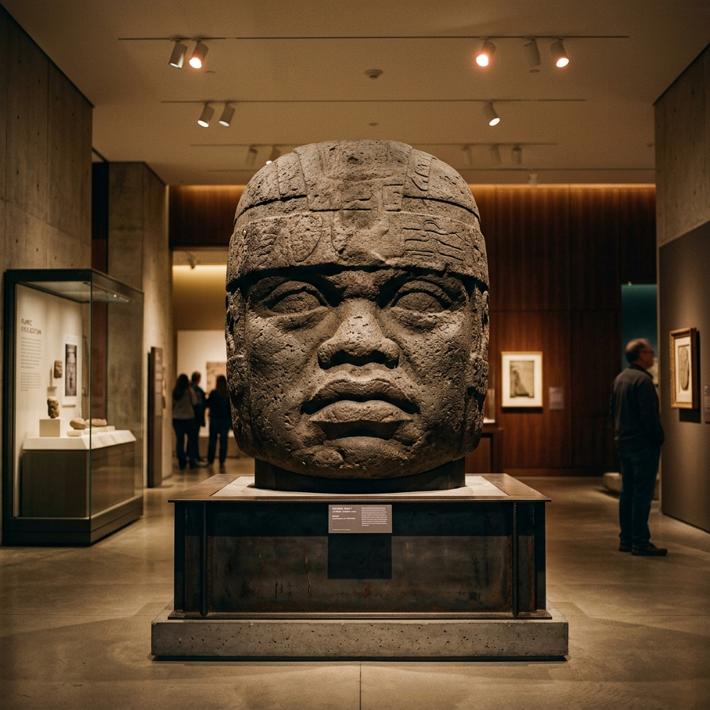
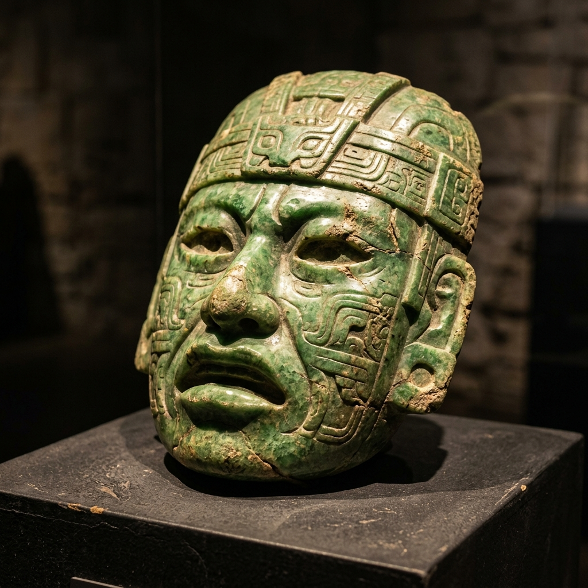

Historia y Museo
Conoce el legado de la primera gran capital de Mesoamérica, un portento de ingeniería, arte y poder político.
La Primera Gran Capital (1200 - 850 a.C.)
San Lorenzo Tenochtitlán, ubicado en el actual estado de Veracruz, es reconocido mundialmente como el primer centro regional de la cultura olmeca y una de las primeras grandes ciudades de toda Mesoamérica.
Durante su periodo de esplendor, se consolidó como el eje del poder político y religioso, albergando a una sociedad altamente jerarquizada que logró movilizar enormes cantidades de mano de obra y controlar las redes de comunicación a través del río Coatzacoalcos.

Un Portento de Ingeniería Urbana
Para protegerse de las inundaciones recurrentes de la región, los ingenieros olmecas lograron una hazaña asombrosa: construyeron la ciudad sobre una enorme meseta artificial de más de 50 metros de altura, modificando el paisaje a una escala sin precedentes.
Además, diseñaron y construyeron un complejo sistema hidráulico subterráneo compuesto por bloques de basalto volcánico tallados en forma de "U" unidos milimétricamente con tapas, lo que demuestra un manejo maestro del agua y de la arquitectura cívica.

El Arte del Poder: Cabezas Colosales
San Lorenzo es el lugar de hallazgo de 10 de las 17 cabezas colosales descubiertas hasta hoy. Estas esculturas gigantescas de piedra volcánica (basalto), que pesan varias toneladas, fueron transportadas desde las montañas de los Tuxtlas a decenas de kilómetros de distancia.
- Retratan a los gobernantes ancestrales olmecas.
- Tienen rasgos únicos, evidenciando que eran retratos fieles de personas reales.
- Llevan yelmos o "cascos" protectores que sugieren su rol como guerreros o participantes en el juego de pelota.

Redescubrimiento y Legado
Aunque el sitio era conocido localmente, adquirió fama mundial gracias a las expediciones arqueológicas del doctor Matthew Stirling en 1945, financiadas por la National Geographic Society, quienes desenterraron por primera vez las inmensas cabezas colosales y las mostraron al mundo moderno.
Hoy en día, las investigaciones continúan por parte de expertos e instituciones, utilizando tecnología avanzada para desentrañar los misterios de cómo vivía, comía y se organizaba la asombrosa civilización precursora de Mesoamérica.

Cronología del Esplendor
Momentos clave en la evolución de la civilización olmeca en San Lorenzo.
1800 a.C. - 1200 a.C.
Fase Ojochi y Bajío: Primeros asentamientos agrícolas. Pequeñas aldeas comienzan a prosperar en las fértiles riberas del río Coatzacoalcos, marcando los inicios de la ocupación del lugar.
1200 a.C.
Inicio del Apogeo: Se inicia la modificación monumental del terreno. Los olmecas construyen la gigantesca meseta artificial de San Lorenzo, convirtiéndola en la ciudad más grande de su tiempo en toda Mesoamérica.
1000 a.C.
Máximo Esplendor (Fase San Lorenzo): Época de mayor poder económico y religioso. Se tallan la gran mayoría de las Cabezas Colosales y los altares de piedra. El comercio y la influencia política se extienden por toda la región.
850 a.C. - 900 a.C.
Declive: La población comienza a abandonar el sitio, posiblemente debido a cambios ambientales o movimientos tectónicos que alteraron los ríos. El poder y la hegemonía regional se trasladan a la ciudad de La Venta (Tabasco).
1945 d.C.
Redescubrimiento: El arqueólogo estadounidense Matthew Stirling, guiado por exploradores locales, redescubre la grandeza del sitio al excavar las inmensas cabezas, mostrando la cultura olmeca al mundo moderno.